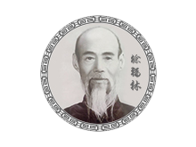
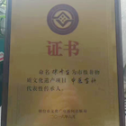
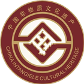

非物质文化遗产
非物质文化遗产
1875年：徐氏医馆（徐氏中医复春堂前身）正式成立，并以管氏十三方和太极炉在鲁地享有声誉。
1937年：成立“复春堂”诊所。（现存民国三十六年（1947年）税收单据可查）
1952年：中央人民政府给“复春堂”颁发卫医字六三号诊所开业执照。
1955年：中央人民政府颁发“复春堂”诊所六八号诊所执照（现存复春堂底稿，人民医院第一任院长迟吉征书写）。
1959年：徐成斋尽得恩师芒针大师沈金山教授真传，以芒针悬壶济世荣获当地政府发予表扬信（有存档）。
1940年：徐梦九承家风，深得徐氏医理之真谛，药理之精髓，熟练掌握并发展了各种膏、丹、丸、散、汤药及烧药发泡疗法，在中医药领域建树颇丰，对太极炉的配制处方的炮制上推陈出新，独辟蹊径，富有创造性。
1944年：与解慎安、张渠安、刘富臣开设“松寿药铺”行医，直至公私合营。
1956年：任山东省莱州第三人民医院院长。
1980年：荣获山东省政府颁发的最高中医医学资格证书。
徐济生进一步继承了徐氏中医传统，并把鼻炎膏、复春堂补肾壮阳中药粉、复春堂便秘丸等祖传秘制中药发扬光大，以真实疗效惠济众生。
2016年：被命名为山东省烟台市市级非物质文化遗产项目“中医全科”代表性传承人。
2014年：复春堂鼻渊膏以其独特配方、切实疗效通过鼻炎膏专利申请，获得鼻炎膏专利。专利号：201410117172.7。
2016年：徐氏中医复春堂入选山东省烟台市非物质文化遗产名录。
 京公网安备 11000002000006号
京公网安备 11000002000006号